Elliptical Gaussians has five internal degrees of freedom: position,
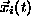
, orientation,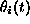
, major axis,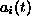
, and core width,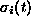
. To approximate a solution to the Navier-Stokes equations, these basis functions translate, rotate, elongate and spread under the convective action of the linearized flow field and the diffusive action of viscosity. A single basis function has the form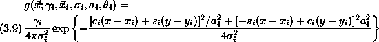
where
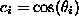
and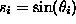
. This formulation where the product of the semi-major and semi-minor axes is unity isolates the core size parameter,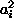
. Implementing geometric variables rather than a general quadratic form as Leonard and Teng have done permits one to more easily control the relevant convergenc parameters. Of course, the entire vorticity field is approximated as a linear combination of these basis functions:
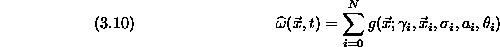
where all indexed parameters with the exception of  evolve with
time.
evolve with
time.
To derive the differential equations governing the parameters of each basis function, we apply (3.8),
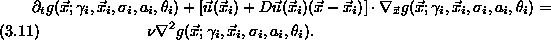
where
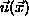
and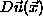
arise from Biot-Savart integrations on the Gaussian basis functions. Numerous expansions and manipulations yield the following discrete dynamical system describing the motion and deformation of the computational elements: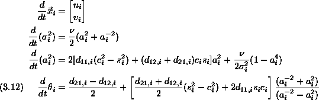
where
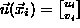
and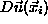
has elements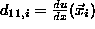
,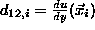
, etc.
Another way to approach the coefficients describing the evolution of
and  is through their connection with
the velocity deviation tensor oriented in a reference frame
aligned with the elliptical Gaussian. If
is through their connection with
the velocity deviation tensor oriented in a reference frame
aligned with the elliptical Gaussian. If
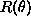
denotes a standard rotation matrix through an angle of , one can change bases into a coordinate system aligned with the basis function axes:
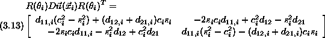
Decomposing the transformed tensor into symmetric and antisymmetric parts respectively, one finds:
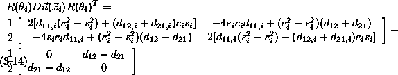
In this expression, we see that coefficients corresponding to elongation are
represented in the symmetric part of the velocity deviation tensor. At the
same time, the symmetric part can also contribute to the rotation because
the eigenvectors of  need not be aligned with the axes of the basis
function. Similarly, the antisymmetric part of
need not be aligned with the axes of the basis
function. Similarly, the antisymmetric part of  corresponds to a
pure rigid body rotation as appears in the first term of the evolution
equation for
corresponds to a
pure rigid body rotation as appears in the first term of the evolution
equation for  .
.
From system (3.12), one observes certain properties in these
elliptical Gaussians. The first equation is no surprise. From the second
equation, one can see that elongation of the basis functions augments
spreading as one might expect. As with CCSVM, the width,  must be
numerically controlled by adaptive refinement. This procedure will be
described in more detail in §4, but here we will use the fact
that the refinement procedure exists and guarantees that
where l is a controllable numerical parameter associated with the accuracy
of the method.
must be
numerically controlled by adaptive refinement. This procedure will be
described in more detail in §4, but here we will use the fact
that the refinement procedure exists and guarantees that
where l is a controllable numerical parameter associated with the accuracy
of the method.
In the third equation, one can see that in the absense of viscosity, one can expect the basis function to elongate exponentially when the velocity field imposes some form of strain. Thus, one would expect the growth of the aspect ratio to be bounded by
where
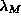
is the largest positive value of where
over a relevant spatial or temporal domain. For the linearized analysis
under consideration,  and its derivatives are known and bounded, so
one can be certain that exists.
and its derivatives are known and bounded, so
one can be certain that exists.
To analyze this method, the typical domain is the trajectory of a computational element through the flow, or perhaps the entire flow over all space and time. The bound, , is valid for all indices, i and all time and assumes unit initial aspect ratios. If
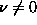
, viscosity naturally regulates the elongation, and there is an upper bound,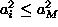
: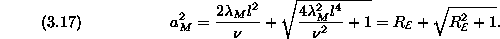
Thus, the maximum elongation of each basis function is controlled by the dimensionless quantity
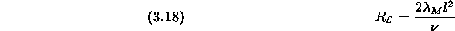
which from this point on shall be referred to as the basis function Reynolds number somewhat related to the grid Reynolds number used to analyze finite difference schemes.
Herein lies a hidden advantage of corrected core spreading methods. We shall see later that the spatial accuracy of this method is
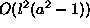
. Thus, an investigator might be tempted to use two numerical parameters to control l and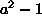
, respectively. In fact, we have just see that this is not necessary. For small l (and therefore small basis function Reynolds number), we can expand (3.17) as
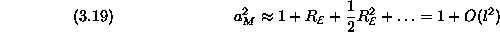
Thus,
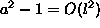
, and l is the only relevant numerical parameter for this scheme. No additional adaptive refinement is required to force the method to converge. If one were to employ an operator splitting technique with deformable blobs, one would need to implement a scheme that would reduce the aspect ratio of elements to take full advantage of their high spatial order.
In the fourth equation, we see that rotation is induced through two
distinct mechanisms. The first term on the right hand side corresponds
to revolution due to pure rotation in  . The second term
corresponds to rotation induced by strain that is not aligned with the
major or minor axis. If
. The second term
corresponds to rotation induced by strain that is not aligned with the
major or minor axis. If  is not close to 1, the evolution equations
can be solved directly.
is not close to 1, the evolution equations
can be solved directly.
However, it is not unreasonable for the aspect ratio to pass through unity as the blob evolves under (3.12), but such a circumstance might be disasterous for numerical integration even though the phase is of little importance in this situation. As
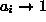
, one can see that there is a removable singularity in this evolution equation. If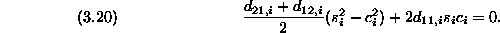
Solving for  , one obtains
, one obtains
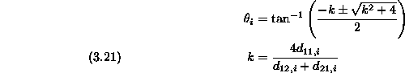
If one lets
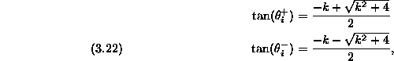
and applies the trigonometric identity
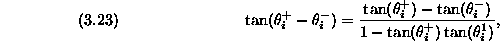
one can see that (3.21) guarantees that the denominator is zero. Therefore,
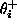
and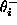
are complementary. Not surprisingly, the two complementary angles which satisfy (3.20) also maximize (or minimize) with respect to , so that one can see that if the aspect ratio passes through unity, the computational element aligns itself with a phase that maximizes its rate of elongation. Numerically, one would merely calculate this angle when the aspect ratio become sufficiently close to one.Whether or not the aspect ratio moves through a value of one, one can calculate the maximum value of with respect to phase by factoring
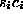
out of (3.16) and applying (3.20) to obtain
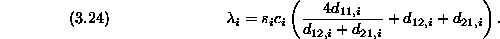
Applying (3.21) to
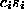
, one finds that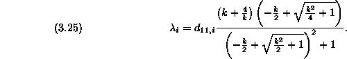
Without loss of generality, we chose the solution, to determine k.
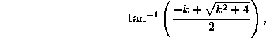
of (3.21) to evaluate .
Routine analysis of the (3.25)
reveals
the relationship between  and as described
in Fig. (3.1).
and as described
in Fig. (3.1).
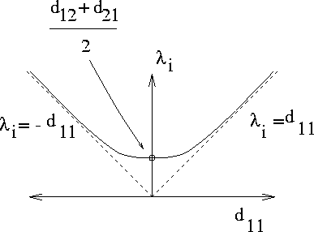
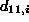
and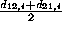
and .
The analysis in the section can be summarized as follows:
Also, by determining
the absolute bound on , we are guaranteed that the aspect ratios
will collapse to 1 as l approaches zero. Also, this results enables an
investigator to use  as a means of tracking the basis function
Reynolds number and therefore the accuracy of a given calculation.
as a means of tracking the basis function
Reynolds number and therefore the accuracy of a given calculation.